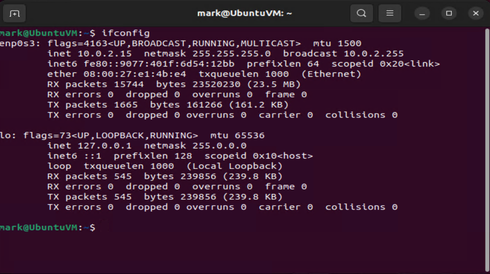
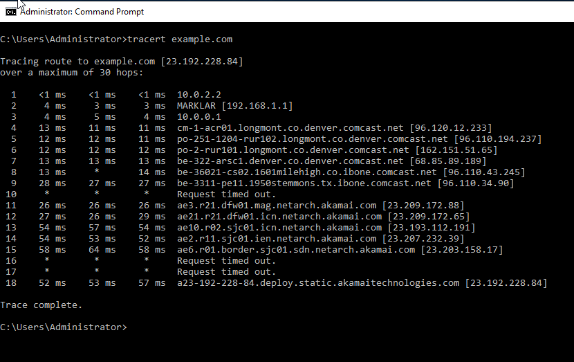
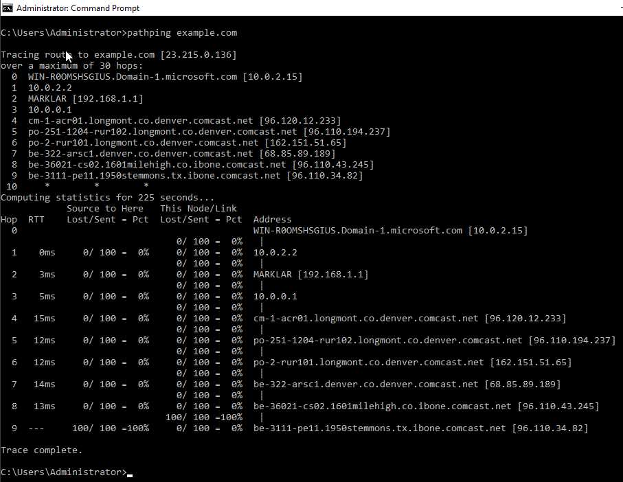
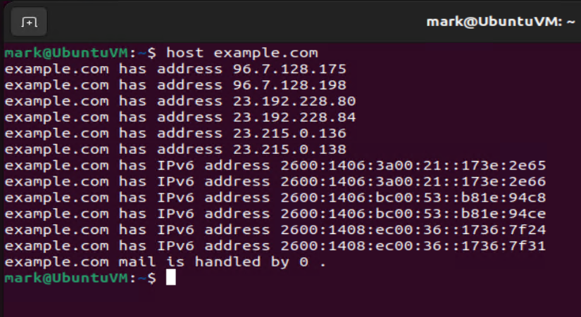
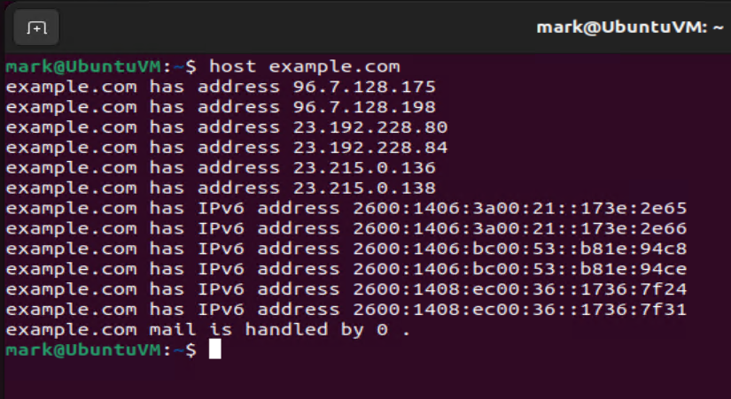
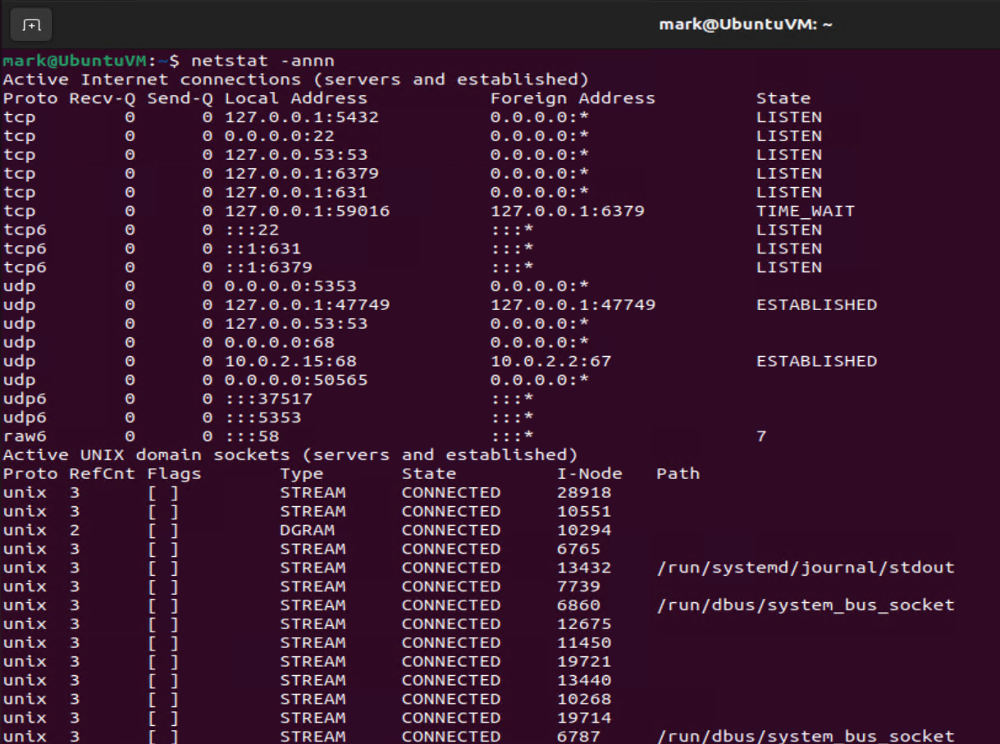
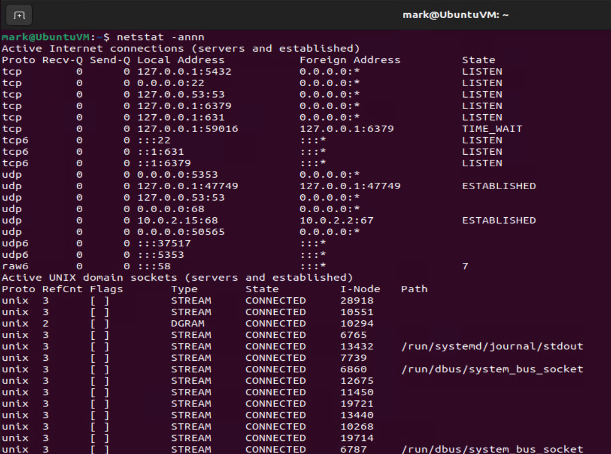

Cross-Platform Networking Command-Line Skills: A Practical Tutorial
Understanding Networking Commands
Networking commands via the Command-Line Interface (CLI) allow IT professionals to effectively diagnose, troubleshoot, and manage network connections by offering detailed insights and real-time control over network environments.



2. ARP Table Inspection
Inspecting ARP tables to correlate IP addresses with MAC addresses.
arp -a
Benefits: Identify devices, troubleshoot connectivity, detect unauthorized devices.

6. Trace Routing
Systematically analyzing the route network packets take.
Windows:
tracert google.com

Linux:
traceroute example.com
Scenarios for use: Slow connectivity, network outages
7. Pathping
Comprehensive analysis of latency and packet loss.
Windows:
pathping example.com

Linux (using MTR):
mtr example.com

Additional Useful Commands
Route (View routing tables):
Windows:
route print
 Linux:
route -n
ip route
Linux:
route -n
ip route

Hostname (View or change hostname):
Windows:
hostname
 Linux:
hostname
sudo hostnamectl set-hostname new-hostname
Linux:
hostname
sudo hostnamectl set-hostname new-hostname
Conclusion
Mastering these networking commands significantly empowers IT professionals to diagnose, troubleshoot, and optimize network environments. This guide provided practical usage and scenarios for each command, delivering crucial insights into network performance and maintenance.


Linux: ifconfig ip a sudo dhclient -r sudo dhclient sudo systemd-resolve --flush-caches Scenarios for use: IP acquisition issues, outdated DNS cache.


 Linux:
host google.com
host -t MX example.com
host -t NS example.com
dig example.com
dig MX example.com
dig NS example.com
Linux:
host google.com
host -t MX example.com
host -t NS example.com
dig example.com
dig MX example.com
dig NS example.com
 



 Troubleshooting scenarios: DNS misconfigurations, email delivery issues.
Troubleshooting scenarios: DNS misconfigurations, email delivery issues.


 Linux:
netstat -an
ss -tuln

Linux:
netstat -an
ss -tuln

 Applicable scenarios: Unauthorized connections, port conflicts
Applicable scenarios: Unauthorized connections, port conflicts


 Linux:
ping -c 4 example.com
ping -i 0.5 example.com
ping -s 100 example.com
ping -M do -s 1472 example.com
Linux:
ping -c 4 example.com
ping -i 0.5 example.com
ping -s 100 example.com
ping -M do -s 1472 example.com